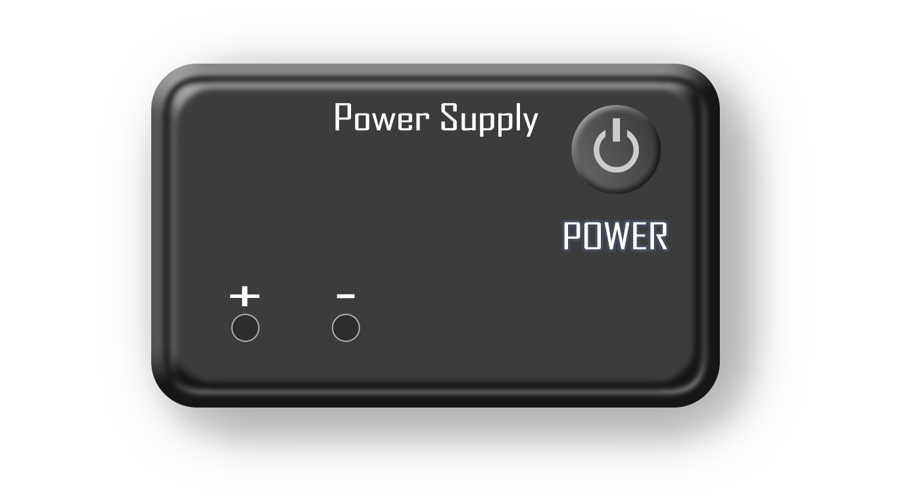

Instructions
- STEP 1: Make connections by dragging nodes from aparatus to the circuit.
- STEP 2: Check your connections by clicking on the 'CHECK' button.
- STEP 3: If the alert is ‘Invalid connections’ the experiment will be reload automatically and repeat from step 1.
- STEP 4: If the alert is Right Connections then follow the below steps.
- STEP 5: Set the values of resistances R1, R2, R3 by adjusting the sliders, these values will remain constant throughout the experiment.
- STEP 6: Click the ‘Power’ button to turn on the power supply.
- STEP 7: Now, vary the voltage value by adjusting the voltage slider, the readings on the voltmeter will change accordingly.
- STEP 8: Click on the ‘ADD’ button to add the readings to the observation table.
- STEP 9: Repeat steps 5 and 6 until we reach to the 6th reading (Minimum reading to be taken to plot the graph is 6).
- STEP 10: Click on the ‘PLOT’ button to display the graph.
- STEP 11: Click on ‘PRINT’ button to take out the print of the page.
- STEP 12: Click on ‘RESET’ button to refresh the page.
-
(a) Connect power-supply to the circuit. (1-9, 2-10).
(b) Connect voltmeter (3-11, 4-12) and (5-13, 6-14) and (7-15, 8-16) or you can connect any voltmeter to any resistance in circuit.
(c) Click on the label to delete all the connections for the corresponding nodes.
Instructions
TO VERIFY KIRCHHOFF'S VOLTAGE LAW



OBSERVATION TABLE
| S.No | Voltage(Power supply) | V1 | V2 | V3 |
|---|
GRAPH